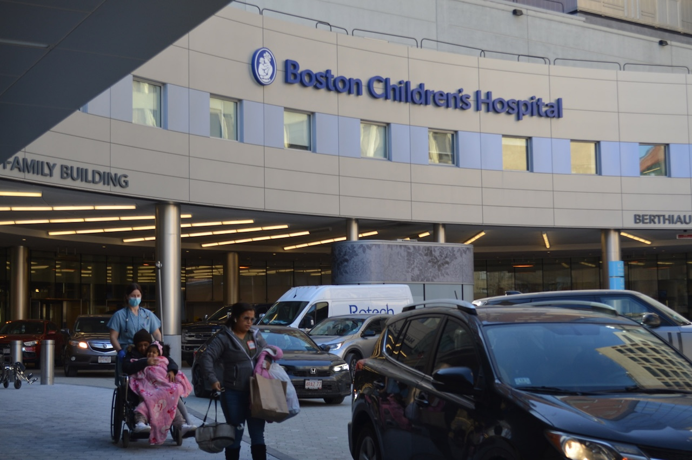
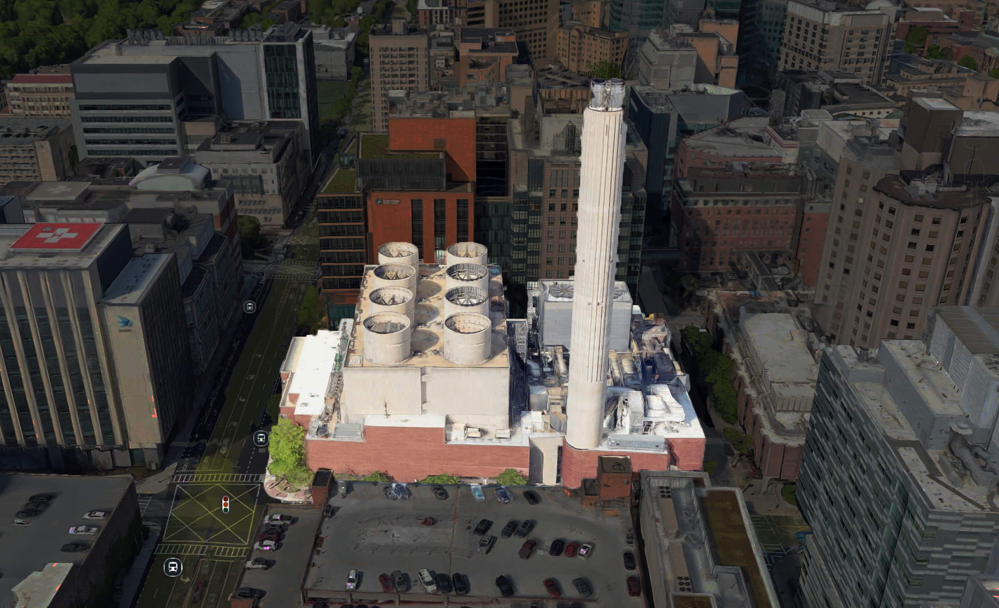
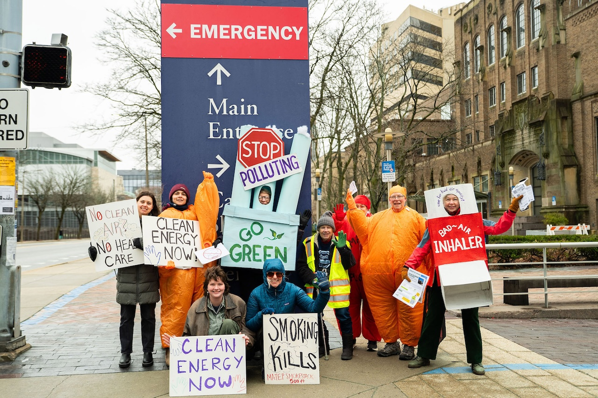
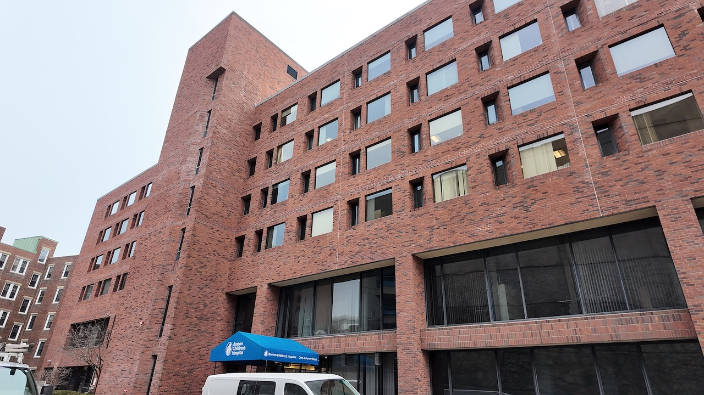
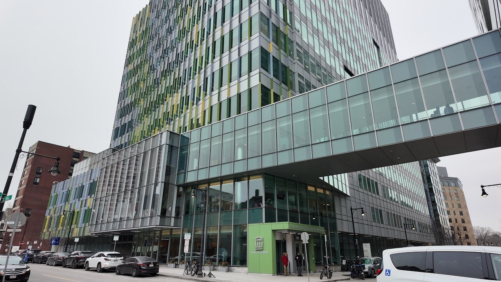

ENVIRONMENT

On a weekday morning in Boston’s Longwood Medical Area, patients hurry between hospital buildings for appointments. Parents push strollers toward Boston Children’s Hospital. Doctors and nurses move quickly as ambulances arrive outside the emergency department. Inside, “There are premature babies, said Leann Canty, a Jamaica Plain resident who is a physician and advocate with Mothers Out Front. “There are children with health problems, including asthma. There are cancer patients.”
Within sight of the hospital, another structure rises above the neighborhood, smoke billowing from its massive chimney. The Medical Area Total Energy Plant (MATEP) supplies electricity, steam, and chilled water to Children’s and many of the hospitals and research institutions in Longwood where doctors care for thousands of patients each day, treating them for everything from cancer and heart disease to allergies and respiratory illness.
The plant rarely appears in conversations about public health, but it’s a key reason why many hospitals in Boston — powered in part by the fossil-fuel-driven MATEP — are also among the city’s largest sources of greenhouse-gas emissions, contributing significantly to the pollution that is “closely linked with asthma and asthma flares as well as other respiratory illnesses, and has also been linked with cardiovascular disease, kidney disease, even dementia.”, said Canty.

If Boston is going to reduce climate pollution, the work will start with buildings — the city’s largest source of emissions.
About 70 percent of Boston’s greenhouse-gas emissions come from buildings, according to city data. “If the city wants to make real progress on climate goals, the building sector is where the biggest changes have to happen,” said Hessann Farooqi, executive director of the Boston Climate Action Network, a community-based organization that works with Boston residents to advocate for climate justice and stronger clean energy policies.
That’s the goal behind Boston’s Building Emissions Reduction and Disclosure Ordinance (BERDO). The policy requires large buildings to report their energy use and gradually cut emissions to reach net zero by 2050 — a task that remains especially complex for hospitals. Hospitals are required to reduce emissions under BERDO, but they have limited control over the energy system. “There's only so much they can do, they can’t force MATEP to do things differently,” said Mireille Bajani, co-executive director of Slingshot.
Building owners are “just starting to understand how their buildings perform,” said Aidan Callan, Boston’s BERDO program manager, adding that reporting data is the first step toward actually reducing emissions. Using that data, the city can compare how different types of buildings perform. Already, there’s one clear takeaway: Hospitals stand out as some of the lowest-performing buildings in the city.
BERDO uses an Energy Star rating to track emissions. It’s similar to the rating on most home appliances, but takes into account factors such as a building’s size, type, occupancy, and energy use compared to similar buildings. Four out of five buildings in Boston fall into just two categories: multifamily housing and office buildings. These tend to perform relatively well in the city’s energy data, with an average Energy Star score of 71.
The ratings for hospitals are a different story.
To better understand what drives these low scores, we reached out to hospitals across the city. Most declined to comment or did not respond, but Brian Smith, senior manager of energy, building systems, and sustainability at Boston Children’s Hospital explained MATEP’s role in its energy use and emissions.
Because the plant operates as a private utility and is not subject to the same regulations as the traditional grid, “the emissions can be higher associated with the plant and the utilities,” Smith said, calling it one of the hospital’s “most unique challenges.”
But the structure of the energy system is only part of the story. Hospitals themselves have far more demanding energy needs.
“Hospitals are energy-intensive buildings because they're running 24/7. They have a lot of specialized equipment. So any hospital is going to be a high-power user,” said Farooqi.
“Hospitals are energy-intensive buildings because they're running 24/7."— Hessann Farooqi, executive director of the Boston Climate Action Network
At Boston Children’s Hospital, Smith points to ventilation as one of the biggest drivers. In clinical spaces, he said, systems may require “20 to 40 air changes an hour at 50 or 60 degrees, when it’s 100 degrees outside,” which means hospital systems are constantly pulling in outside air, cooling it, filtering it, and replacing the air inside, sometimes every few minutes, to prevent the spread of infection.
That level of demand can increase even further during periods of extreme weather, when energy use spikes across the system. “Peaker plants tend to run on the hottest and coldest days, when people are already more vulnerable and when air pollution has stronger health impacts,” said Canty.
Those requirements help protect patients, but they also push hospital energy use far beyond most other building types.
A similar tension is visible from inside the hospitals themselves.
“It’s a very fascinating trade-off,” said Maddy Kline, an MD-PhD student at Harvard Medical School. “You have to be able to provide patients with the best possible care… but at the same time, it’s mind-boggling that the air inside the hospital has to be so clean, and then you step outside and you’re right next to these fossil fuel burning power plants.”
And that’s where MATEP comes in.
The plant operates on a co-generation model, producing electricity and heat from the same fuel source. Two natural gas turbines and six diesel engines generate power on site. Instead of venting hot exhaust as waste, the facility captures that heat to produce steam for nearby hospitals and research buildings, allowing the system to extract more energy from each unit of fuel than a conventional power plant.

MATEP was built in 1974 with one priority in mind: keeping the lights on. Each year, the plant releases roughly 290,000 tons of carbon dioxide, nearly 600 tons of nitrogen oxides, and significant amounts of particulate pollution. Today, the environmental cost of that model is becoming harder to ignore, and other hospital systems show it doesn’t have to be this way.
How many trees would it take to absorb 290,000 tons of CO₂ by MATEP?
MATEP emits 290,000 tons of CO₂ every year. A mature tree absorbs ~48 lbs (~22 kg/year).
Scroll right and see how many trees it takes to absorb that.
0
trees scrolled past
0%
of the way there
You made it to the end.
13,181,818 trees — 6.5× all trees in Boston. One plant. Every single year.
Electrification could cut these emissions by 85%.
The facility sits next to Mission Hill, Roxbury, and Jamaica Plain — neighborhoods where residents have raised concerns about air quality and respiratory illness since the plant was first proposed in the 1970s. “Communities near the MATEP plant, especially Mission Hill, have lower health statistics than other parts of Boston,” said Canty.
She said the risks are not limited to a single group. “Pollution doesn’t stay in one place. It spreads,” Canty said, adding that exposure affects both nearby residents and people who spend time in the area.
Advocates say awareness remains low despite the plant’s location. “Many people in the Longwood area don’t even know there’s a power plant there,” said Mireille Bejjani.
Pressure to reduce emissions from the facility has grown in recent years. A coalition of advocacy groups, including Slingshot, the Massachusetts Clean Peak Coalition, Climate Code Blue, SEAM, and YouthCAN has called for the plant’s older turbines to be replaced with renewable energy and battery storage, arguing that cleaner alternatives are technically feasible even in a dense urban setting. Advocates say more people are starting to pay attention to the plant. “When someone learns that there is a power plant right there, the response is almost always shock or dismay,” Bejjani said.
Regina LaRocque, an associate professor of medicine at Harvard Medical School, said the health implications of fossil fuel use are not in question. “As doctors and health professionals, our primary responsibility is to do no harm,” she said. “But what often gets overlooked is that the operations of our institutions can actually cause harm. Hospitals and healthcare systems have a footprint. That includes pollution and climate impacts.”
The risks of the plant are well understood. “We know that particulate matter and emissions from fossil fuels affect heart disease, lung disease, neurological conditions, and pregnancy outcomes,” said LaRocque.
To address the issue, recent organizing efforts have taken the form of public demonstrations. On March 23, 2026, advocates gathered near the MATEP facility for a Clean Energy Day protest, where organizers focused on raising awareness and calling for cleaner alternatives.
“A big part of this along the way has been education and outreach because so many people in the Longwood area have no idea that MATEP is even there,” said Bejjani.
She said the goal of the effort was to inform people working and receiving care in the area and to push for change. “Getting out there, sharing information with hospital staff, with patients, with local residents, making sure they’re in the loop and giving them an opportunity to weigh,” she said.

For Farooqi, the problem is not just about reducing emissions, but about how difficult that transition is in practice. “Decarbonizing hospitals is new and hard, especially in a dense urban area like Longwood,” he said.
That complexity comes from how the system is structured. “MATEP doesn’t just provide power — it also provides steam, which is a key element for the hospitals in terms of sanitizing things,” said Bejjani.
Bejjani said transitioning away from that system would require changes on both sides. “Shifting to a different technology would involve some adjustments from the hospitals,” she said, noting that even when alternatives exist, different stakeholders often disagree on what is feasible.
Hospitals in the Longwood area are tied to the facility through long-term utility agreements that run through 2051. Those contracts were signed when the current operator, ENGIE North America, took over the plant in 2018. That arrangement effectively ties the Longwood medical campus to fossil-fuel-dependent energy for decades to come, even as many of its institutions publicly commit to ambitious climate goals. “The opportunities to really upgrade or improve efficiency are very limited,” said Smith, from Children’s hospital. “It’s hard to do that and to get the capital and the time to shut things down.”
New hospital construction is beginning to show what lower-emission healthcare buildings could look like.
At Boston Children’s Hospital, leaders say newer facilities are already demonstrating how modern design can significantly reduce energy use. A key example is the Hale Building, a 650,000-square-foot clinical tower that opened in 2016.


"The energy use intensity of that building is less than half of the previous clinical building that we probably built maybe 20 years ago," Smith said.
Hospital officials say newer buildings tend to perform better because they are designed using more modern efficiency standards. Many of today’s facilities include better insulation, thicker and more energy-efficient windows, and updated building systems that use less energy to heat, cool, and power the building.
“It’s just easier to run a space efficiently when it is well insulated, when you have thicker windows,” said Kate Lewandowski, director of sustainability at Boston Children’s Hospital.
A similar approach can be seen at Boston University, where the Duan Family Center for Computing & Data Sciences was designed to be fully electric and net-zero, powered entirely by renewable energy. “CDS is the largest fully fossil-fuel-free and net-zero building in the city of Boston,” said Sam Moller, assistant director of communications for BU Sustainability.
Buildings like this show what is possible when projects are designed from the ground up. “It showed us at BU that it’s possiblу. We have the ability and we can decarbonize how we operate our built environment,” Moller said, adding that such buildings help reduce emissions across the university.
Such projects are easier when building from scratch — a luxury older hospitals do not have as they work through trying to lessen their energy needs.
In the meantime, hospitals remain tied to MATEP — a system built decades ago that continues to shape how energy is produced and used in Longwood today.
For Mireille Bejjani, that gap between what’s possible and what exists is hard to ignore.
"It's 2026. We have a lot of technology that didn't exist when the power plant was built in the 80s. So people are like — why can't we do better? Why is this something we have to keep putting up with?"